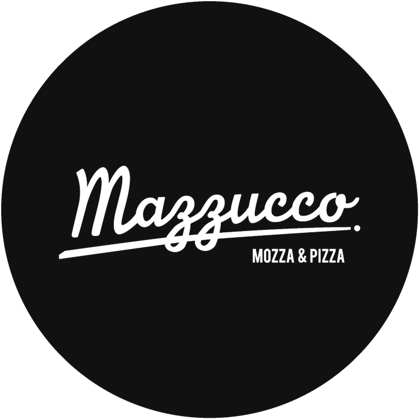
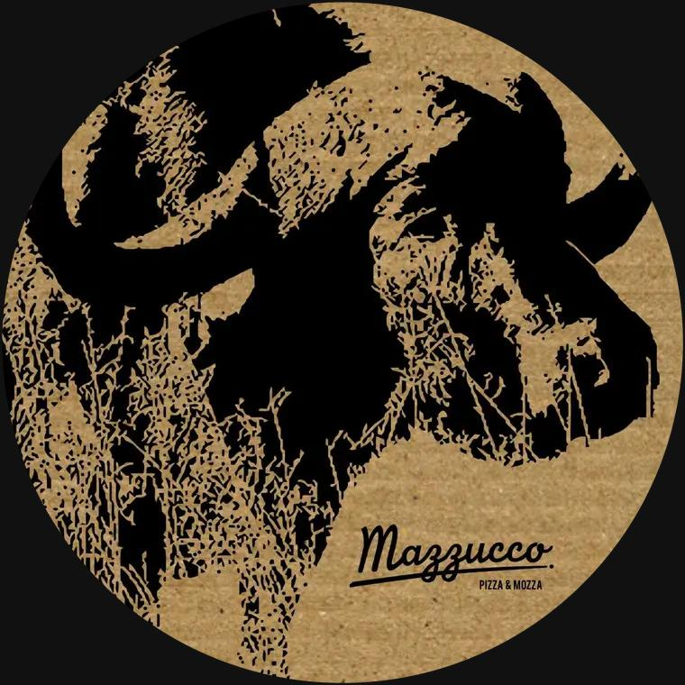

Pizza al momento
Bar à pizza & focaccia
Une pâte qui fermente quatre à cinq jours, pour plus d'arômes et de légèreté. Pizzas et focaccias sont garnies et cuites sur place ; vos invités peuvent composer la leur.
Bars à pizza et à mozzarella cuisinés devant vos invités, avec des produits venus directement d'Italie. Séminaires, salons, soirées d'entreprise et réceptions, à Paris et partout en France. Lorenzo Mazzucco orchestre chaque prestation lui-même.
Mazzucco intervient en direct ou aux côtés des traiteurs et des agences, pour la partie italienne de leurs réceptions.
Lorenzo suit votre dossier du premier appel au dernier service, avec des réponses rapides, y compris sur WhatsApp.
Entreprise immatriculée (SIREN 480 403 211, activité traiteur). Kbis et attestations fournis pour vos référencements fournisseurs.
Basés en Île-de-France, nous nous déplaçons à Paris, en région parisienne et partout en France.
Nous travaillons sous la bannière de votre agence ou de votre maison de réception quand vous le souhaitez.

dal 2015 Le concept Mazzucco, aujourd'hui 100 % traiteur et événementielDepuis tout petit, Lorenzo Mazzucco passe tous ses étés en Italie, en Vénétie : la région de Venise et du prosecco, au pied des Dolomites. Formé à l'École Ferrandi à Paris, il a ensuite passé plus de trente ans en cuisine et en salle, en restaurant comme en bar à vin. Il dirige sa propre entreprise de traiteur et d'organisation événementielle depuis 2005.
En 2015, il crée le concept Mazzucco autour de deux produits : la mozzarella et la pizza. Il le lance au 7 rue d'Enghien, à Paris, avec un bar à mozzarella et une pizzeria remarqués par Time Out, Le Bonbon et le Petit Futé.
Aujourd'hui, Mazzucco se consacre entièrement au traiteur et à l'événementiel. La règle n'a pas changé : Lorenzo sélectionne les produits, prépare ses denrées et ses antipasti, et vient servir avec son équipe.
Lorenzo MazzuccoChaque été en Italie, entre Venise et les Dolomites, au pays du prosecco et du spritz.
La formation de référence des métiers de la gastronomie.
Trois décennies de métier, des fourneaux au service.
Traiteur, organisation événementielle et conseil aux entreprises.
Mozza & pizza, lancé au 7 rue d'Enghien, Paris 10e.
100 % traiteur et événementiel, partout en France.
Chaque animation se combine aux autres, en cocktail dînatoire comme en repas complet.
Une pâte qui fermente quatre à cinq jours, pour plus d'arômes et de légèreté. Pizzas et focaccias sont garnies et cuites sur place ; vos invités peuvent composer la leur.
Le spritz est né en Vénétie, la région où Lorenzo a passé ses étés. Le classique, décliné avec différents amers (Aperol, Campari, Select), le Saint-Germain à la fleur de sureau et le limoncello spritz.
Pain grillé minute, garni devant vos invités : tomates et basilic, mozzarella, antipasti maison, charcuterie italienne. Un format idéal pour l'apéritif et les cocktails debout.
La mozzarella di bufala Campana nature, fumée ou à la truffe, et la burrata, servies avec nos antipasti maison : poivrons confits, fenouil braisé, aubergines rôties et gressins.
Les pâtes fraîches, cuites al dente, sont mélangées dans une meule de Parmigiano Reggiano. Le fromage fond et forme une sauce crémeuse. L'animation phare des grands formats. D'autres recettes de pâtes sont disponibles, ou préparées sur demande.
Le tiramisu classique au mascarpone et au café, et ses variations (fruits rouges, chocolat, sans gluten), servis en verrines.

La bufala, emblème de la maisonLorenzo sélectionne ses produits directement en Italie, et prépare lui-même ses denrées et ses antipasti.
Chaque formule s'adapte au nombre d'invités, au lieu et au déroulé. Tarifs sur devis.
Cocktails, afterworks, vernissages, accueil de salon.
Soirées d'entreprise, séminaires, anniversaires, mariages.
Salons, lancements de produit, galas, grands formats.
Catalogue détaillé et grille tarifaire envoyés sous 24 h ouvrées.
Depuis 2015, le concept mozza & pizza de Lorenzo a été salué par la presse parisienne et par ses clients.
« Chez Mazzucco, on ne badine pas avec mozza et pizza. »
Sélection Bonnes tables Paris.
Adresse recommandée : un bar à mozzarella dans l'esprit de la nouvelle vague italienne, où la qualité des produits fait la différence.
Lire la critiquePrésente Lorenzo Mazzucco, diplômé de Ferrandi, et son concept 100 % italien approvisionné par de petits artisans.
Lire l'articleA retenu Mazzucco dans sa sélection des meilleurs bars à mozzarella de Paris.
Voir la sélectionLorenzo Mazzucco, restaurateur italien formé à l'École Ferrandi, à la tête de son entreprise de traiteur et d'organisation événementielle depuis 2005. Il gère chaque événement lui-même, du devis au service.
Depuis 2015. Lorenzo a lancé le concept Mazzucco Mozza & Pizza au 7 rue d'Enghien, à Paris, où il a été salué par Time Out, Le Bonbon et le Petit Futé. Aujourd'hui, Mazzucco se consacre uniquement au traiteur et à l'événementiel.
Nous sommes basés en Île-de-France et intervenons à Paris, en région parisienne et partout en France. Les frais de déplacement sont précisés dans le devis.
Oui. Toutes les mozzarellas, la burrata et la scamorza viennent véritablement de Campanie, à base de lait de bufflonne pour la mozzarella di bufala. La charcuterie est une sélection issue du salon Slow Food, directement d'Italie. Lorenzo prépare lui-même ses antipasti et ses desserts.
Les formules comptent de nombreuses options végétariennes (pizzas, mozzarella, antipasti, tiramisu). Des versions sans gluten sont possibles sur demande : précisez-le dans le configurateur.
Contactez-nous dès que la date est connue. Pour les salons et les grands événements, plusieurs semaines d'avance permettent de bloquer l'équipe et les produits.
Oui, nous intervenons aux côtés de traiteurs et d'agences événementielles, y compris en marque blanche pour la partie italienne d'un événement.
Envoyez la date, le lieu et le nombre d'invités. Lorenzo vous répond personnellement avec une proposition.